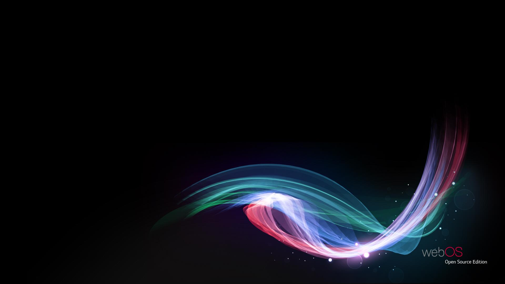
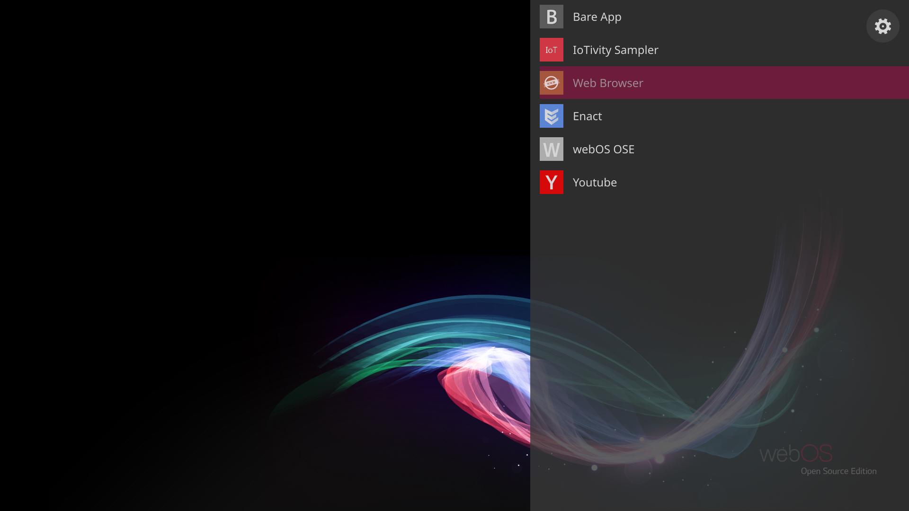
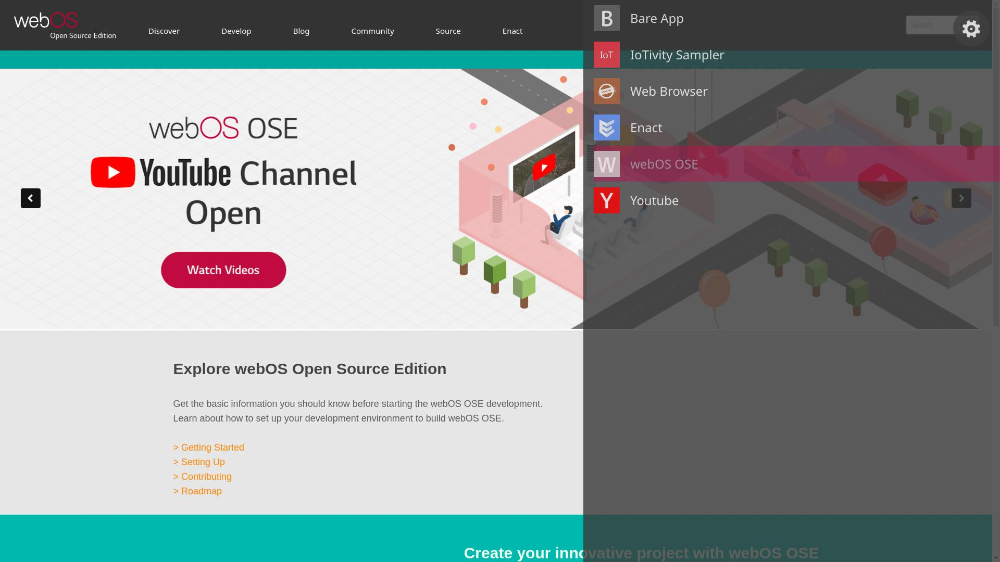
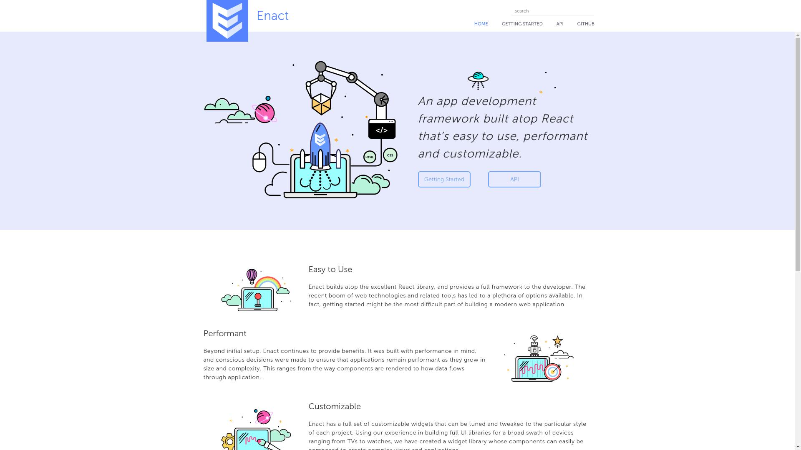
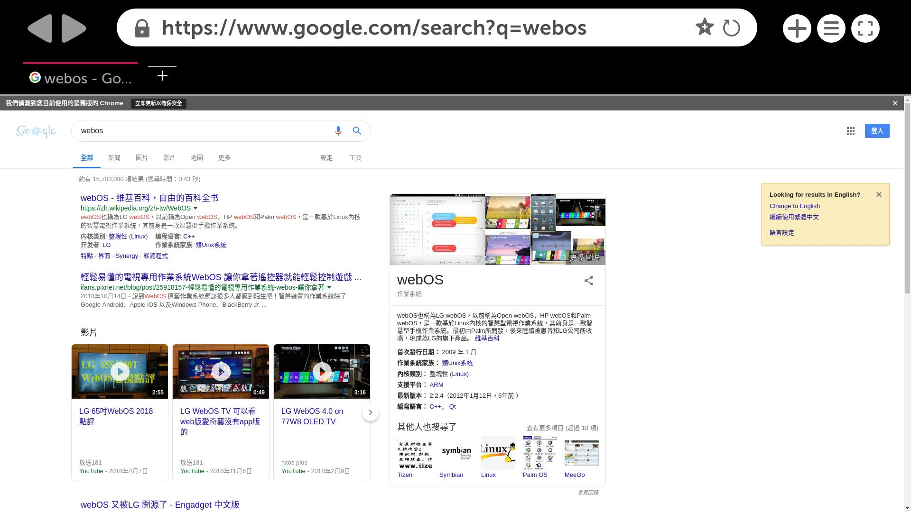
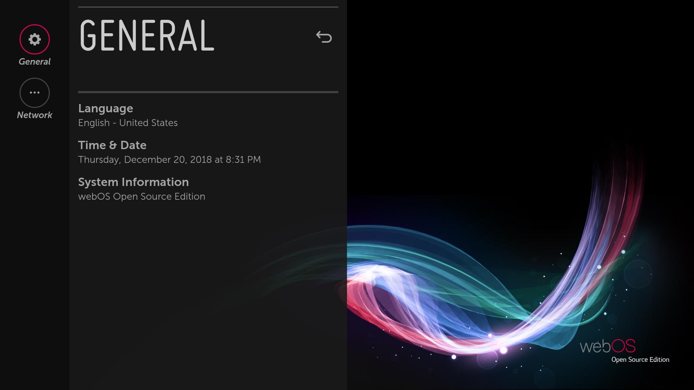
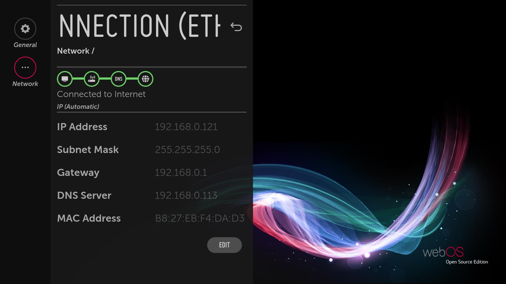

在 webOS OSE 研究筆記: 認識 webOS 一文中我們稍微介紹了關於 LG 在今年 (2018) 的 3 月開源的 webOS OSE (webOS Open Source Edition), 這款類似 LG 用於 TV 上面的 webOS TV 的系統。
本文將介紹如何使用 webOS OSE 提供的基於 Yocto Project 的編譯系統，編譯並建立 Raspberry Pi 3 上的 webOS OSE 系統。
下載
要編譯 webOS OSE 之前，建議先看一下 WebOS OSE 官方網站的介紹。
首先，我們先透過 git 取得基本的編譯環境
coldnew@gentoo ~ $ git clone https://github.com/webosose/build-webos.git
由於這個編譯環境是基於 Yocto Project 所建立，因此請先確定你的系統有滿足 Yocto Project 編譯需要的一些基本依賴，如果不確定並且你的系統是 Ubuntu 系列的話，你可以透果以下腳本來確認環境是否有滿足編譯需求。
coldnew@gentoo ~/build-webos $ sudo ./scripts/prerequisites.sh
設定
第一次進入到這個編譯環境，我們需要透過 webOS OSE 提供的 mcf 腳本來指定目標機器。由於目前只提供 Raspberry Pi 3 這個執行目標，因此這樣下命令讓我們編譯環境設定成編譯給 Raspberry Pi 3 使用
coldnew@gentoo ~/build-webos $ ./mcf raspberrypi3
設定完成後，接下來就是進行編譯的工作了
編譯
首先我們先透過 source 命令設定好當前 shell 的環境
coldnew@gentoo ~/build-webos $ source oe-init-build-env
完成後，接下來就是選擇編譯目標，如果只是一般驗證用，可以選擇 webos-image
coldnew@gentoo ~/build-webos $ bitbake webos-image
如果是想要進行開發的話，推薦選擇 webos-image-devel 會比較好
coldnew@gentoo ~/build-webos $ bitbake webos-image-devel
接下來可以去睡一覺，因為編譯過程中會編譯到 Chromium，這會編譯非常久喔 ~
燒錄到 SD 卡
編譯完成後，我們可以在 BUILD/deploy/images/raspberrypi3 下面找到名為 *.rpi-sdimg 的檔案，這是做好給 Raspberry Pi3 開機用的 SD 卡
coldnew@gentoo ~/build-webos $ ls BUILD/deploy/images/raspberrypi3/*.rpi-sdimg BUILD/deploy/images/raspberrypi3/webos-image-devel-raspberrypi3-master-20181221030950.rpi-sdimg BUILD/deploy/images/raspberrypi3/webos-image-devel-raspberrypi3.rootfs.rpi-sdimg BUILD/deploy/images/raspberrypi3/webos-image-raspberrypi3-master-20181221040749.rpi-sdimg BUILD/deploy/images/raspberrypi3/webos-image-raspberrypi3.rootfs.rpi-sdimg
我們先進入到 BUILD/deploy/images/raspberrypi3 資料夾去
coldnew@gentoo ~/build-webos $ cd BUILD/deploy/images/raspberrypi3/
將你的 SD 卡裝到電腦上，這邊假設建立了 /dev/sdd* 這樣的 device node, 則我們可以透過 dd 命令這樣將 image 燒錄到 SD 卡上
sudo dd if=webos-image-devel-raspberrypi3-master-20181221030950.rpi-sdimg of=/dev/sdd bs=1M
完成後，就可以將卡片插入到你的 Raspberry Pi 3 開機並等啟動完成 (可以接上 TTL 轉 UART 線看 console 上的訊息)
開機完成會看到下面這樣的畫面

基本的使用
由於桌面上沒有任何東西，也無法進入到 App Launcher 去，因此需要將鍵盤和滑鼠接到你的 Raspberry Pi 3 上
接上鍵盤後，點擊 Super 按鈕 (或是 Windows 按鈕，就是有微軟符號的那個) 會啟動 App Launcher, 有少數幾個 App 可以使用

注意到 webOS OSE 目前似乎不支援觸控功能，因此操作都需要依賴滑鼠或是鍵盤 (就像 webOS TV 那樣用遙控器控制)
如果網路有通的話，可以透過 ssh 來登入你的 Raspberry Pi 3，和一般的 Linux 發行板不同 webOS OSE 採用的是 Dropbear 來替代傳統使用的 OpenSSH 來作為 ssh service。
root@raspberrypi3:~# ps aux | grep drop root 800 0.0 0.0 3800 668 ? Ss 20:30 0:00 /usr/sbin/dropbear -B -F -d /var/lib/dropbear/dropbear_dss_host_key -r /var/lib/dropbear/dropbear_rsa_host_key root 18899 0.0 0.0 3384 556 ttyS0 S+ 21:03 0:00 grep drop
如何擷圖
雖然我們還沒要講 webOS OSE 的架構，不過這邊就先來簡單說說如何透過指令進行擷圖 (screenshot) 吧
整個 webOS 系統 (包含分支的 LuneOS) 皆是透過 luna-service 來進行訊息的傳遞 (IPC) ，因此如果我們要擷圖的話，則這樣下命令
luna-send -n 1 -f luna://com.webos.surfacemanager/captureCompositorOutput '{"output":"/home/root/screenshot.jpg","format":"JPG"}'
下完後就會在 /home/root 下面看到 screenshot.jpg 產生，此外該命令也會以 JSON 格式回傳執行結果
root@raspberrypi3:~# luna-send -n 1 -f luna://com.webos.surfacemanager/captureCompositorOutput '{"output":"/home/root/screenshot.jpg","format":"JPG"}'
{
"output": "/home/root/screenshot.jpg",
"format": "JPG",
"resolution": "1920x1080",
"returnValue": true
}
其他擷圖
這邊提供一些 screenshot 作為參考。
webOS OSE
會進入到 webOS 的網頁

Enact
webOS OSE 提供使用者使用 Enact 來作為 App 構件用的語言，這是基於 React 的 web framework。點擊這個 App 會進到 Enact 的首頁

Web Browser
web OSE 採用 Chromium 來作為瀏覽器的核心，看樣子他們也有自己做一套 UI

Youtube
預設最完整的就是 Youtube 的程式了， 記得為了防止非洲豬瘟入侵台灣， 不可以攜帶任何肉品入關呦!
System Setting
系統設定就比較陽春點，只能查看一些訊息和設定網路連線。

